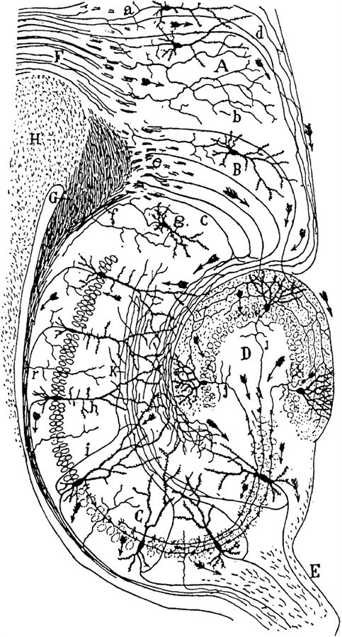

La Masson 2002Santiago Ramón y Cajal, the neural circuitry of the hippocampus, from Histologie du système nerveux, 1911

La Masson 2002Santiago Ramón y Cajal, the neural circuitry of the hippocampus, from Histologie du système nerveux, 1911
The A-R3 scenarios, why the Neural ODE cannot learn, the DESCARTES-NeuralODE search with an LLM in the loop, eleven architectures that all predict spikes through alien internals, the auxiliary-loss sweep, and the preparations for an L5 pyramidal replication — one hundred and twenty-five questions and their answers
Prompts to dig deeper, three reports that expose baseline, drift and identifiability problems in the method, the information levels a surrogate would need, a cortical prosthesis design, and thirteen research prompts to settle before running more experiments.
Three prompts — a Beniaguev deep dive, a reusable template, and the eight-task implementation prompt. Skipped here; the files are linked.
(Claude wrote three prompt documents; as research prompts they are not reproduced here and are linked below.)
Three files:
L5PC_DEEP_DIVE_PROMPT.md — The specific prompt for Beniaguev. Paste this into a new Claude conversation, then feed it the paper PDF, repo README, and key code files one at a time. It'll extract only novel details you don't already know.
DEEP_DIVE_TEMPLATE.md — The reusable version. Fill in the [STUDY] and PRIOR KNOWLEDGE sections for any future paper (hippocampal MIMO, Oláh CNN-LSTM, consciousness datasets, etc.)
L5PC_RESEARCH_PROMPT.md — The full implementation guide from earlier (8 tasks, environment setup through analysis).
Workflow: Use the deep dive prompt first to extract details from the paper/repo → update the research prompt with what you learn → then hand the research prompt to Claude Code on the Vast.ai instance for implementation.
An adversarial prompt across six hunting grounds that lists everything already known so it returns only new findings. Skipped here; the file is linked.
(As a research prompt, the document is not reproduced here; it is linked below.)
This prompt is structured as adversarial scrutiny with six specific hunting grounds: NEURON simulation gotchas, TCN architecture deep details, papers you might not know about (2023-2026), theoretical gaps, experimental design blindspots, and scooping risk.
How to use it:
The key difference from the earlier deep dive prompt: that one asks "what's in this document?" This one asks "what's NOT in my knowledge that SHOULD be?" — it actively hunts gaps rather than passively extracting.
The prior knowledge section is comprehensive so it won't waste time repeating the DVT gradient ratio, ELM neuron, Jaxley, etc. — all those findings from that document are already listed as known.
A voltage-only baseline, detrending against shared drift, a circular-shift null, 639 compartments, a non-dilated TCN, whitened PCA targets and identifiable gating products all change the design.
These three reports are excellent — each has a different analytical personality (adversarial audit, surgical extraction, and systematic deep-dive), and they converge on the same critical findings while each contributing unique details. Let me walk through what's genuinely new across all three, organized by how urgently it changes your experiment.
The single most important finding is the voltage-only baseline problem (Document 3, Critical Finding #4). This one could invalidate your entire probing methodology if you don't address it. The Hodgkin-Huxley system is formally observable from voltage alone — fast activation gates like m are algebraically determined by voltage through adiabatic elimination (m ≈ m∞(V) when τ_m is much smaller than τ_spike). This means if your TCN accurately predicts somatic voltage, it trivially "knows" m without having "learned" sodium gating in any meaningful sense. So if you find Ridge R² > 0 for m from hidden states, that proves nothing. The critical control is computing R²(gating variable ~ somatic voltage alone) as a baseline, then reporting only the excess ΔR² = R²(hidden states) − R²(voltage). Only the excess constitutes evidence of independent gating encoding. For slow variables like Ih or Ca²⁺ that carry genuinely independent information from V, this comparison becomes the real test. This reframes every probing result you'll get — without this baseline, positive results are uninterpretable and negative results might be artifacts of using linear probes on a nonlinear voltage→gating mapping.
The second critical finding is the spurious regression problem from shared slow drift (Document 3, Critical Finding #5). Granger & Newbold proved in 1974 that two independent non-stationary time series can yield R² ≈ 0.47 purely from shared drift. Your setup is exactly this scenario: both TCN hidden states and biological gating variables are driven by the same slowly-fluctuating piecewise-constant Poisson input. Slow variables like Ih (τ = 50–300ms), Im, and Ca²⁺ dynamics (τ = 20–460ms) will show correlated low-frequency drifts with hidden activations simply because both respond to the same input modulation. A Ridge regression on raw time series will confound this with genuine encoding. The fix involves high-pass filtering or detrending both signals before regression, decomposing R² by frequency band (below 5 Hz vs above 5 Hz), checking Durbin-Watson statistics on residuals, and reporting whether R² survives detrending. This is especially relevant because your A-R3b result showed slow synaptic variables as "recoverable" (19/40) — you need to verify those weren't spurious from shared drift.
The random permutation null is wrong for autocorrelated time series (Document 3, Critical Finding #6). Standard permutation testing destroys temporal autocorrelation, producing an unrealistically tight null distribution near zero. With your smooth, autocorrelated biological signals, even a randomly aligned probe achieves moderate R² because both signals are smooth. The correct null is a circular shift by a random offset greater than 100ms (preserving autocorrelation while breaking alignment), using at least 1000 shifts. Additionally, the Hewitt & Liang 2019 "selectivity" framework from EMNLP provides a complementary control: train the same probe on an untrained (randomly initialized) TCN's hidden states. If the untrained network's hidden states yield similar R² to the trained one, your probing result is meaningless.
The compartment count is 639, not ~200 (confirmed across all three documents). This isn't just a number correction — it fundamentally changes the scale of your experiment. With 12 channel types × multiple gating variables per type × 639 segments, the full biological state space exceeds 10,000 variables, not the ~500-2000 estimated in your guide. Input dimensionality is 1278 (639 excitatory + 639 inhibitory), not ~600. This affects Ridge regression dimensionality, memory requirements for recording, and the statistical power calculations.
The architecture is NOT a standard TCN (confirmed across all three documents with increasing precision). Dilation rates are uniformly 1 across all layers, there are no residual connections, no dropout, and the receptive field comes entirely from large kernel sizes (~22-23 per layer). Document 4 adds the mathematical constraint: with 7 layers and T=153, the decomposition requires non-uniform kernel sizes (likely 5 layers of 23 and 2 layers of 22). If you implement using any standard TCN library with default exponential dilation, you'll get a completely different architecture. This also changes the interpretability story — without dilation, there's no hierarchical multi-timescale feature extraction. Each layer sees only 21-22 new timesteps of context, meaning temporal hierarchy is weak.
The PCA whitening detail is genuinely new and important (Documents 3 and 5). The DVT PCA is computed with whiten=True, meaning the 30 components are decorrelated and scaled to unit variance. The network's internal representations are trained against these abstract statistical objects, not raw millivolt dendritic voltages. Document 5 makes the sharp point that this creates a "dual-track" probing requirement: you need to probe hidden states against both raw voltages AND whitened PCA components. If R² is high for whitened components but low for raw voltages, the network learned the abstract loss manifold, not the biology. If R² is high for raw voltages despite whitened training, the network maintained an isomorphic mapping to physical reality despite the abstract penalty.
The DVT clipping at +2.0 mV before PCA is a training artifact that suppresses calcium dynamics (Documents 3 and 4). The code clips dendritic voltages at 2.0 mV (or ±3σ, depending on the version) specifically to "diminish importance of bAP and calcium spikes." This means the TCN's DVT loss actively de-weights learning of backpropagating action potential signatures and calcium spike dynamics. If you find low encoding of Ca_HVA or Ca_LVA gating variables under Condition B (DVT-supervised), that's partly a training artifact from this clipping, not evidence that calcium dynamics are fundamentally unlearnable. You'd need to retrain without clipping to distinguish.
The Walch & Eisenberg 2016 identifiability result changes what you should probe for (Document 3, Important Finding #8). Individual gating variables are formally NOT identifiable from voltage — only their product with maximal conductance is identifiable (g·m³h for sodium, g·n⁴ for potassium). Time constants ARE identifiable. This means probing for individual m, h, n variables may be asking the wrong question entirely. You should add identifiable combinations to your probing targets alongside individual variables. If Ridge R² is zero for individual m but positive for g_Na·m³·h, that's not a zombie — it's a network that learned the identifiable physics.
The temporal autocorrelation dramatically reduces effective sample size (Document 3, Important Finding #5). With membrane voltage autocorrelation of ~5-10ms, your 6000 timepoints per trial reduce to ~600-1200 effective independent samples. For Ridge regression with 128 hidden features, you need at least 1280-2560 effective samples. This means single-trial probing may be underpowered, and you need temporal-block CV rather than random-split CV within trials.
The Tanoh et al. 2025 NeurIPS paper is the closest published work to your zombie test (Document 3, New Paper #2). They use EKF + Jaxley to recover gating variables as latent states from extracellular recordings — conceptually the same question but using model-based inference rather than DNN probing. This has "medium-high narrative overlap" and needs to be cited and distinguished from your approach. The key difference: they use a known dynamical model (Jaxley) to infer states, while you're testing whether unconstrained architectures spontaneously discover them.
The Physics-XAI framework (Document 3, New Paper #17) is the closest methodological precedent. They applied PCA to GRU hidden states of a physics surrogate for elastoplasticity and found hierarchical encoding — shallow layers capture fast elastic response, deep layers encode slow relaxation. This is exactly your timescale hierarchy finding, but in a different physical domain. It validates your approach and provides a direct methodological comparison.
The Kaggle training data lacks DVT entirely (confirmed Documents 4 and 5 with additional detail). Document 5 adds the crucial point that attempting to train with the original loss function on downloaded Kaggle data will immediately crash with a missing variable exception — the 30 PCA components aren't in the training archives at all, only in the smaller test dataset. You must re-simulate locally. Document 5 also estimates the full raw DVT storage at ~549 GB for the training set, explaining why PCA reduction was necessary.
The temporal lag probing idea (Document 3, Important Finding #6) is methodologically important. The TCN's causal convolutions create a ~153ms processing delay. Fast gating variables respond nearly instantaneously to voltage while slow variables evolve over tens of milliseconds. The optimal probing lag differs by variable type. Testing Ridge R² at lags Δ ∈ {-10, -5, 0, +5, +10 ms} could reveal systematic offsets, and finding peak R² at Δ ≠ 0 would indicate a false negative at zero lag. Document 4 adds that the first ~153ms of each 400ms output window has an incomplete receptive field, so probing should use only timesteps 153 onward.
The nonlinear ICA identifiability theory (Document 3, Important Finding #7) provides formal backing for your approach. Hyvärinen et al. 2024 proved that nonlinear latent components become identifiable when they have distinct temporal dynamics. Since HH gating variables have different time constants spanning four orders of magnitude (NaTa_t m: ~0.05ms through Ih: ~300ms), this theory predicts temporal structure should in principle allow their separation — but only if the mixing function is smooth and injective, conditions that may not hold for the lossy spike-generation nonlinearity.
Now, should I update your L5PC research prompt and deep-dive prompt to incorporate all of these? The critical additions are the voltage-only baseline, detrending controls, circular-shift null, identifiable combinations probing, whitened vs raw dual-track analysis, and the corrected compartment count of 639.
Lipson & Schmidt worked because trajectories preserve the state; spikes are a shadow on the wall — the question is at what level of observation rediscovery succeeds.
Yes — that's a sharp analogy. You're thinking of the Lipson & Schmidt work (2009, Science) where they gave a system observational data from a double pendulum and it symbolically rediscovered Newton's laws of motion and conservation of energy from raw trajectories.
The connection to your work cuts both ways:
The optimistic reading: That AI physicist succeeded because the data it observed (position, velocity, acceleration trajectories) preserved the full state information needed to reconstruct the laws. The pendulum's position trajectory is a complete observable — Newton's laws are recoverable from it because the mapping from laws → trajectory is invertible.
Your zombie finding says the opposite holds for spikes. Spike output does NOT preserve the full state information. The mapping from 10,000+ gating variables → spike train is massively many-to-one. The AI physicist had a data stream rich enough to reconstruct the generating law. Your networks have a data stream too compressed to reconstruct the generating mechanism. That's exactly the information-loss explanation (B) from your A-R3b analysis.
And now the voltage-only baseline from those reports makes this precise. If you gave the AI physicist only the pendulum's shadow on one wall instead of its full trajectory, it could NOT rediscover Newton's laws — too much information destroyed in the projection. Spikes are the shadow. Somatic voltage is closer to the full trajectory. Dendritic compartment voltages are even closer. The question becomes: at what level of observation does the "AI physicist" succeed?
That's actually a beautiful framing for your paper — worth a sentence in the discussion.
Two stacked bottlenecks — what the signal contains and what the resolution can represent; an information-level ladder from spikes to full state, and a proposed recoverability-frontier heatmap.
This is the right question. Your A-R3b data already answers it partially — let me lay out what the evidence says.
What you've tested so far (Le Masson, spike training):
The training signal is binary spike output from 20 TC neurons. That's roughly 20 bits per timestep. The biological state space is 160 continuous variables. The spike signal is massively compressed — it's the shadow on the wall. Result: zombie across the board at α=1.0.
When you added bio variables to the loss (A-R3b), the hierarchy appeared:
Slow synaptic conductances (GABA_B, τ ~150ms) became recoverable at 19/40. But fast gating (NaTa_t m, h, τ ~0.05-5ms) stayed at 0/60 even at α=0.0 when bio supervision was the ONLY objective. So the problem isn't just "lack of data in the training signal." Even when you GAVE the network the gating variables as explicit targets, it couldn't learn them.
That means there are actually two different information bottlenecks stacked on top of each other:
Bottleneck 1: What the training signal contains. Spikes carry almost no information about which gating configuration produced them. This is the many-to-one mapping. Adding voltage helps — continuous somatic voltage carries more information than binary spikes. Adding dendritic voltages helps more. But even perfect voltage doesn't uniquely determine individual gating variables (Walch & Eisenberg 2016 — only products like g·m³·h are identifiable from voltage, not m and h separately).
Bottleneck 2: What the temporal resolution can represent. Your networks operate at 0.1ms (Le Masson) or 1ms (Beniaguev). NaTa_t activation completes its full cycle in ~0.2ms. At 1ms bins, the entire m-gate trajectory during a spike is compressed into a single timestep. The network literally cannot represent what it cannot see. This is aliasing, not learning failure. Those reports confirmed this — the 1ms operating resolution of Beniaguev's TCN makes fast gating invisible by construction.
So the hierarchy of "what bio information do you need" looks like this:
Level 0: Spikes only (your A-R3). Information content: firing times, rough rate. Recoverable biology: essentially nothing (Ridge R² ≈ 0). The shadow on the wall.
Level 1: Continuous somatic voltage (Beniaguev's primary output). Information content: subthreshold dynamics, spike shape, afterhyperpolarisation. Recoverable biology: slow variables that correlate with voltage envelope (Ih, maybe slow K⁺). But fast gating is algebraically determined by V (m ≈ m∞(V)), so any R² you find for fast gates is trivial — it's just reading voltage, not independently encoding gating. The voltage-only baseline control from those reports catches this.
Level 2: Dendritic compartment voltages (Beniaguev's DVT loss). Information content: spatial pattern of dendritic activation, NMDA plateau locations, calcium spike signatures. Recoverable biology: which dendrites are active, rough spatial conductance pattern. But DVT is clipped at +2mV (suppressing calcium spikes) and whitened to 30 PCA components — a lossy compression that discards exactly the signals you care about.
Level 3: Full dendritic voltages at high temporal resolution (not in Beniaguev's pipeline). Information content: raw mV traces at all 639 compartments at 0.025ms. Recoverable biology: theoretically, the HH system is formally observable from voltage alone (Aguirre et al. 2017). But practically, observability is ill-conditioned for fast variables between spikes, and individual gating variables still aren't identifiable — only identifiable combinations (g·m³h). You'd need a dynamical model (like an Unscented Kalman Filter), not a static regression, to exploit this.
Level 4: Voltage + calcium concentrations. Adding [Ca²⁺]ᵢ at each compartment breaks the degeneracy for calcium-dependent channels (SK_E2, CaDynamics). Now you can distinguish states that produce identical voltage but different calcium.
Level 5: Full state — all gating variables directly. This is what α=0.0 in A-R3b tested. You literally gave the network all 160 gating variables as targets. Fast gating STILL wasn't recoverable (0/60). Why? Because even with the right targets, the 32-dimensional latent space at 0.1ms resolution physically cannot represent 60 fast-varying independent signals. The architecture is the bottleneck, not the information.
So your question "what if the problem is lack of neuro variable data?" has a layered answer:
For slow variables — yes, the problem IS lack of data. Spikes don't carry enough information about GABA_B conductance, but giving the network that information (A-R3b, α ≤ 0.7) immediately fixes it. More bio data → less zombie for slow variables.
For fast gating variables — no, more data doesn't help. Even α=0.0 (100% bio supervision) failed. The problem is architectural: temporal resolution too coarse, latent dimensionality too small, and the gating-to-voltage mapping is non-invertible at the resolution the network operates at.
This has a direct implication for the L5PC experiment. Beniaguev trains on continuous voltage, not spikes. That's Level 1 instead of Level 0. His DVT loss adds Level 2. So the L5PC test is inherently richer than your Le Masson test. If STILL zombie under these richer conditions, the finding is even stronger.
And it suggests a concrete experimental addition: test what happens at each information level systematically. Train on spikes only, voltage only, voltage + DVT, voltage + DVT + calcium, and probe at each level. Map the "information frontier" — the minimum observation at which each biological variable category becomes recoverable. That's a figure in the paper: an information-level × variable-category heatmap showing the recoverability frontier.
The AI physicist analogy completes it: that system succeeded because position trajectories are a sufficient statistic for Newton's laws. Your question is: what's the sufficient statistic for neural mechanism? Spikes aren't. Voltage partially is. Full dendritic state probably is. Mapping that boundary is the contribution.
Yes: Beniaguev built the prosthesis without calling it one; a four-level validation ladder — output, circuit, mechanism, consciousness — with a minicolumn replacement test as Phase 3.
Yes — and the Beniaguev L5PC is actually the perfect testbed for it. But what your DESCARTES results tell you is that the prosthesis will work at the functional level while being a zombie at the mechanistic level. And whether that matters depends entirely on what you're replacing and why.
Here's the concrete picture.
A cortical MIMO prosthesis for L5PC is straightforward to simulate. The Beniaguev data already defines the I/O mapping: 1278 synaptic input channels → somatic spike output. Their TCN achieves AUC 0.9911. That IS a prosthesis — it takes the same inputs the biological neuron receives and produces the same output the biological neuron would produce. If you severed the real L5PC's axon and injected TCN-predicted spikes into downstream targets, the rest of the circuit would receive functionally identical signals. Beniaguev built the prosthesis without calling it one.
The Le Masson experiment is literally this. Le Masson 2002 replaced a biological neuron with a silicon model neuron using dynamic clamp, and the circuit kept oscillating. Your thalamic simulation replicates this computationally. Extending it to cortex means: run the Hay L5PC in NEURON, train a surrogate on its I/O, then replace the NEURON cell with the surrogate and check whether downstream computation is preserved. The infrastructure exists.
But your DESCARTES results say something profound about what that prosthesis IS internally. It predicts the right spikes through alien computation. The slow synaptic variables might be recoverable with supervision, but the fast channel gating — the molecular machinery that actually generates the spike — will be completely different inside the surrogate. The prosthesis works. It just doesn't work the way the neuron works.
The practical question is: does that matter?
For a motor cortex prosthesis replacing damaged L5 pyramidal cells that project to spinal cord — probably not. Downstream motor neurons care about spike timing and rate, not about what the Ca²⁺ concentration was in the apical tuft 685μm from the soma. Functional equivalence at the output level is sufficient. The prosthesis is a zombie and that's fine.
For a sensory cortex prosthesis where the replaced neuron participates in conscious perception — your thesis says this is exactly where the zombie problem becomes a consciousness problem. If subjective experience depends on the specific biophysical dynamics (integrated information, dendritic calcium spikes, whatever the mechanism turns out to be), then a functionally equivalent zombie prosthesis might preserve behaviour while eliminating experience. The gradual replacement scenario from your "Clones to Quanta" paper.
What a cortical MIMO prosthesis simulation would look like concretely:
Phase 1 is what Beniaguev already did — train a surrogate on L5PC I/O. Phase 2 is what you're about to do — test whether the surrogate is a zombie (DESCARTES probe). Phase 3 is the replacement test: embed the surrogate in a cortical circuit model (even a small one — a minicolumn with 50-100 neurons), replace one or more L5PCs with surrogates, and measure circuit-level consequences. Does the circuit still produce the same population dynamics? Same oscillation frequencies? Same information flow between layers?
Phase 3 is actually feasible. You could take a small cortical column model — Markram's Blue Brain has published microcircuit models, or you could build a minimal one with Hay L5PCs, a few L2/3 pyramidal cells, and some interneurons. Replace L5PCs one at a time with TCN surrogates. Measure population-level outputs. Then apply your Ridge R² zombie test at the circuit level: do the surrogate's hidden states encode not just the replaced neuron's biology, but the circuit-level variables (LFP, population synchrony, interneuron timing)?
The hierarchy of prosthesis validation your work establishes:
Level 1 — Output fidelity: does the prosthesis produce the right spikes? (Beniaguev showed yes, AUC 0.9911)
Level 2 — Circuit preservation: does the circuit still work with the prosthesis inserted? (Le Masson showed yes for thalamus; you'd test for cortex)
Level 3 — Mechanistic correspondence: does the prosthesis compute the same way internally? (Your DESCARTES shows NO — it's a zombie)
Level 4 — Consciousness preservation: does the prosthesis preserve whatever neural correlates matter for experience? (Open question — your thesis frames this as the fundamental challenge)
Nobody has systematically mapped these four levels for any neural prosthesis. Berger's hippocampal MIMO validated Level 1 only. Le Masson validated Levels 1 and 2 only. Your DESCARTES framework tests Level 3 for the first time. The cortical L5PC prosthesis simulation would be the first system where all four levels are explicitly characterised.
So the answer is yes, it's possible, and you're already building the pieces. The L5PC zombie test (what you're about to run) is Phase 2. If you extend it to include a simple circuit embedding (Phase 3), you'd have the first complete prosthesis validation pipeline from single-neuron I/O through circuit function through mechanistic correspondence. That's a paper by itself — possibly the strongest one in your thesis.
Eight research prompts, ranked: baseline, spurious drift and identifiability first, because they could change the interpretation of every existing result. Skipped here; the file is linked.
(Claude wrote the prompts as a separate file; after “continue” it delivered them. As research prompts they are not reproduced here and are linked below.)
Eight standalone research prompts, each targeting a specific vulnerability that could invalidate your experiments if left unaddressed.
The priority order matters:
Do FIRST (could change interpretation of ALL results): - Prompt 1 — Voltage-only baseline. If m ≈ m∞(V), every positive R² for fast gates is trivial. You need the correct baseline before any probing result is meaningful. - Prompt 2 — Spurious regression. Your A-R3b "19/40 recoverable" finding might be shared drift. This is retroactively checkable on existing data. - Prompt 4 — Identifiable combinations. If individual gating variables are theoretically unidentifiable, R² = 0 for m is expected, not evidence of zombies. This could reframe your entire thesis.
Do SECOND (shapes experimental design): - Prompt 3 — Correct null distributions (circular shift, phase randomisation, multiple comparisons for 10,000+ variables) - Prompt 5 — Temporal resolution/aliasing (which variables are invisible at 1ms by construction vs genuinely unlearned) - Prompt 6 — PCA whitening and DVT clipping (what did the network actually learn — biology or abstract statistics?)
Do THIRD (conceptual/paper-level): - Prompt 7 — The information frontier (this is a paper figure — the heatmap of observation level × variable category → recoverability) - Prompt 8 — Cortical MIMO prosthesis simulation (the full 4-level validation pipeline, connects to your thesis)
The logic is simple: Prompts 1, 2, and 4 could reveal that your existing zombie finding is either stronger than you thought (survives controls) or weaker (explained by identifiability theory). Either way, you need to know BEFORE spending GPU hours on L5PC.
Partially: the methodological controls are covered, but these five have no dedicated prompts.
Partially. The methodological controls (voltage baseline, detrending, circular-shift null, identifiable combinations, dual-track probing, 639 compartments) — yes, those are thoroughly covered across Prompts 1-6.
But these five specific items you just quoted — no, they don't have dedicated research prompts:
Want me to create five additional targeted prompts for these, or fold them into the existing eight as additions?
Prompts 9–13, with Tanoh first: model-based recovery proves the information is there, which strengthens the claim that DNNs do not find it. Skipped here; the file is linked.
(As research prompts, the document is not reproduced here; it is linked below.)
Five additional prompts covering the gaps. Here's the priority:
Prompt 9 (Tanoh et al.) — Do first. If they're close to pivoting toward DNN probing, your publication timeline tightens. But their EKF approach actually strengthens your paper: they prove gating recovery IS possible with the right model, you prove DNNs DON'T find it spontaneously. That's the zombie argument.
Prompt 11 (Kaggle/re-simulation) — Do before touching Vast.ai. The Kaggle data is missing everything you need. You need the exact re-simulation pipeline planned before burning GPU hours.
Prompt 13 (Nonlinear ICA) — This one is subtle but critical. If Hyvärinen's theory says variables SHOULD be identifiable from their distinct time constants, and your linear probe says R²=0, there are only two explanations: the TCN didn't maintain the identifiable structure (genuine zombie), or your linear probe is too weak. The theory lets you distinguish these. It also defines the "testable zone" — only probe for variables where theory says recovery is possible.
Prompt 12 (Temporal lag) — Could retroactively change A-R3 results. If any variable jumps from R²≈0 to R²>0.25 at a non-zero lag, that's a false negative you need to correct.
Prompt 10 (Physics-XAI landscape) — For paper writing. You need to know every group that has probed physics surrogates before claiming novelty.
You now have 13 prompts total. That's a serious pre-experiment research programme.
Files written in the conversation and research reports uploaded into it. Files Claude wrote are hosted in the reports/ folder beside this page; report filenames are descriptive placeholders for the files Charith uploaded, which are not yet hosted.
The questions are Charith’s, corrected for grammar and spelling only. The answers are Claude’s, as given in the conversation; tool calls, file contents and research prompts are omitted and noted where they occurred. The model label is inferred from the date of the conversation.
Source: claude.ai project “La Masson 2002”, conversation of 24 February 2026, “Neural ODE evaluation incomplete, Volterra and LSTM latent structure results”.